Actualizador de Mapa · Altiplano Resiliente
Guía para la persona operadora. Explica, con capturas reales de pantalla, cómo usar el tablero web para la actualización trimestral del mapa, de principio a fin.
1. ¿Qué es este sistema?
El Actualizador de Mapa es un tablero que se abre en su navegador (Chrome, Edge o Firefox). Sirve para hacer, cada trimestre, la actualización del mapa del proyecto sin tener que recordar comandos ni pasos técnicos: el sistema le guía y prepara casi todo automáticamente.
El trabajo conecta cuatro herramientas. El tablero es el intermediario que las une:
2. Cómo abrir el tablero
Inicie el programa
En la carpeta del proyecto, haga doble clic en run.bat.
Se abrirá una ventana negra (la “consola”). No la cierre
mientras trabaja: es el motor del tablero.
Abra el navegador
Vaya a la dirección http://localhost:5000. Aparecerá el tablero.
Al terminar
Cierre la pestaña del navegador y luego cierre la ventana negra
(o presione Ctrl + C dentro de ella).
localhost). Nadie de
fuera puede verlo. Es seguro.
3. Conocer la pantalla
Al abrir el tablero verá tres zonas principales: el menú izquierdo, la vista central y el panel de resultados a la derecha.
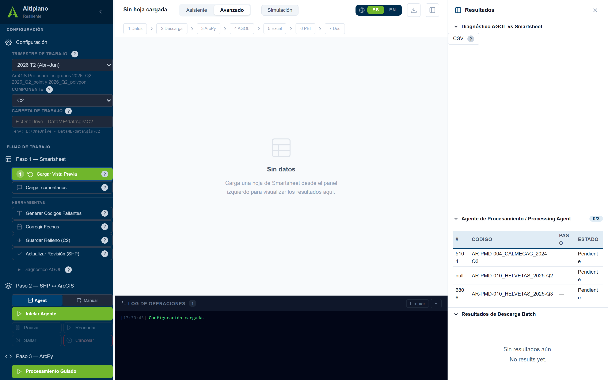
3.1 Menú izquierdo (barra lateral)
Contiene la Configuración arriba y luego cada paso del flujo de trabajo (Paso 1 a Paso 7) más el Orquestador. Cada paso tiene sus propios botones.
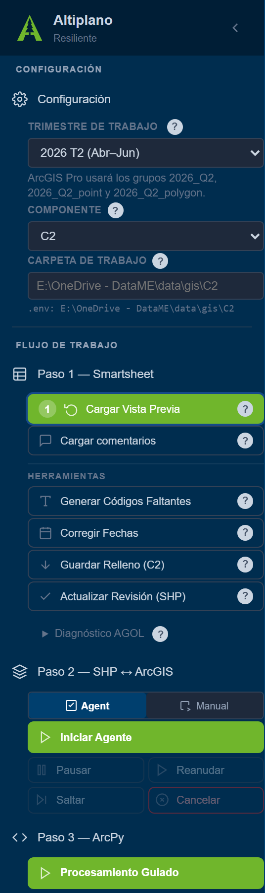
3.2 Barra superior
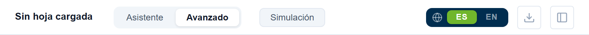
3.3 Panel de resultados (derecha)
Aquí aparecen los resultados del diagnóstico, la cola de trabajo del agente y los resultados de descarga. Si está cerrado, ábralo con el icono de la derecha de la barra superior.
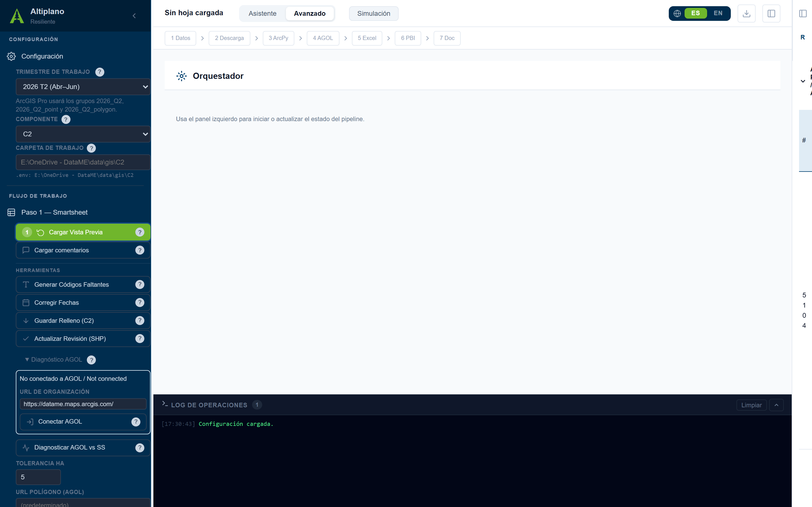
3.4 Log de Operaciones (abajo)
La franja negra inferior registra todo lo que hace el sistema. Si algo sale mal, ahí verá el mensaje. Puede ampliarla, limpiarla o descargarla.
4. Asistente o Avanzado
El tablero tiene dos formas de trabajar. Elija con los botones de la barra superior.
| Modo | Para quién | Cómo funciona |
|---|---|---|
| Asistente | Recomendado al inicio | Le guía paso por paso, una pantalla a la vez, con explicaciones. Ideal para aprender o para no olvidar ningún paso. |
| Avanzado | Cuando ya tiene práctica | Muestra todos los botones a la vez en la barra lateral. Más rápido para quien ya conoce el flujo. |
5. Configuración (antes de empezar)
Antes de cualquier paso, confirme tres cosas en la parte superior de la barra lateral o en la vista Configuración.
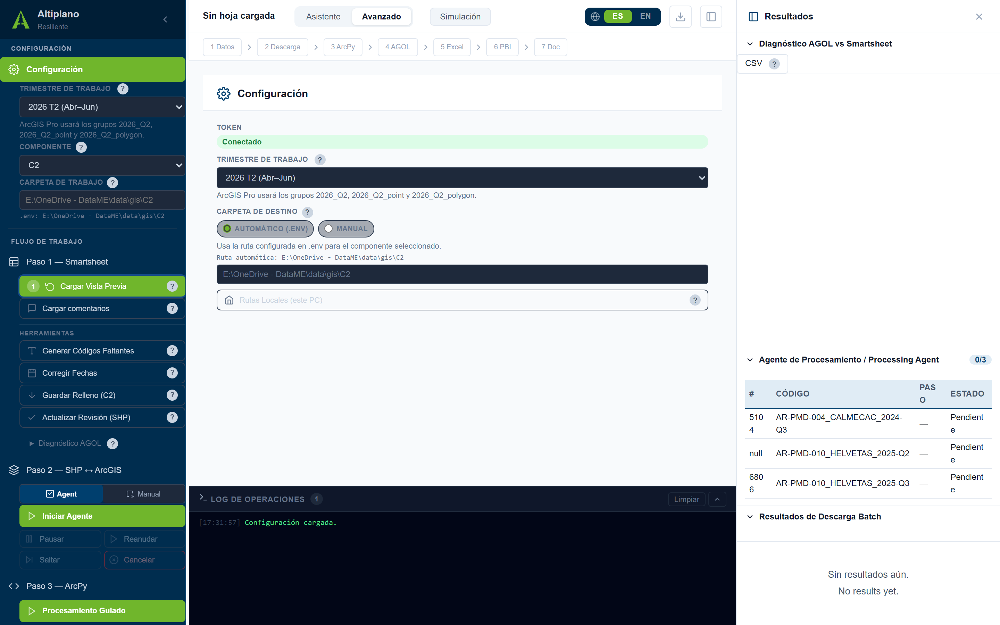
Trimestre de trabajo
Seleccione siempre el trimestre primero. Define los grupos de
ArcGIS Pro (por ejemplo 2026_Q1, 2026_Q1_point,
2026_Q1_polygon) donde se ubicarán los shapefiles.
Componente
Elija C1 (principal), C2 (donaciones) o C3
según la hoja que vaya a trabajar.
Carpeta de trabajo
Por defecto usa la ruta automática, que apunta a su OneDrive de IUCN (la carpeta del componente seleccionado). Solo cámbiela a Manual si necesita otra carpeta. Vea la sección 6 para más detalle.
6. Rutas locales del PC (OneDrive de IUCN)
Todos los archivos del sistema (descargas, datos de Smartsheet, geodatabase y
proyecto de ArcGIS Pro) viven dentro de su OneDrive de IUCN: la
carpeta OneDrive - IUCN… que aparece bajo su usuario de Windows.
E:, C:, D:…). El sistema detecta
automáticamente su carpeta OneDrive - IUCN… y arma las rutas a partir
de ella. Así, la misma configuración funciona en cualquier PC del equipo sin
reescribir las rutas. En el archivo .env esto se ve como el marcador
${ONEDRIVE_IUCN}.
El botón Rutas Locales (este PC) (en la vista
Configuración) abre una ventana donde se ven y ajustan esas carpetas. Estos
valores se guardan en el archivo .env local y nunca se
suben a internet.
| Grupo | Qué configura |
|---|---|
| 📁 Carpetas Smartsheet | Dónde se descargan los archivos de cada componente (C1, C2, C3), dentro de OneDrive de IUCN. |
| 🗺️ ArcGIS Pro — Proyecto | Ruta del archivo .aprx, la geodatabase y el nombre del mapa (también en OneDrive de IUCN). |
| ⚙️ ArcGIS Pro — Instalación | Se detecta automáticamente al instalar; rara vez se toca. |
OneDrive - IUCN…, las rutas quedarán sin
resolver y las descargas fallarán.
7. Conectar a ArcGIS Online (AGOL)
Para el diagnóstico (Paso 1-a) y la publicación (Paso 4) hay que iniciar sesión en ArcGIS Online. Es seguro: el sistema usa una ventana oficial de inicio de sesión y no guarda su contraseña.
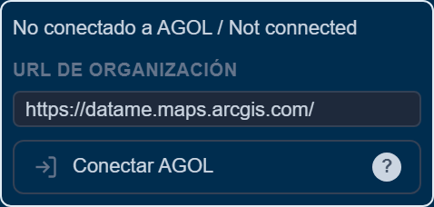
Abrir el panel
En la barra lateral, dentro de Paso 1, abra Diagnóstico AGOL.
Conectar
Verifique la URL de su organización y pulse Conectar AGOL. Se abrirá el inicio de sesión en el navegador.
Sesión activa
Una vez conectado, el panel muestra su usuario y organización. La sesión dura hasta 60 minutos y se renueva sola. Si caduca, un clic basta para reconectar.
8. Paso 1-a · Diagnóstico AGOL vs Smartsheet
Este es el verdadero punto de partida del trabajo diario. Compara lo que está publicado en ArcGIS Online con lo que reporta Smartsheet, y le dice qué actividades coinciden, cuáles tienen diferencias y cuáles son nuevas.
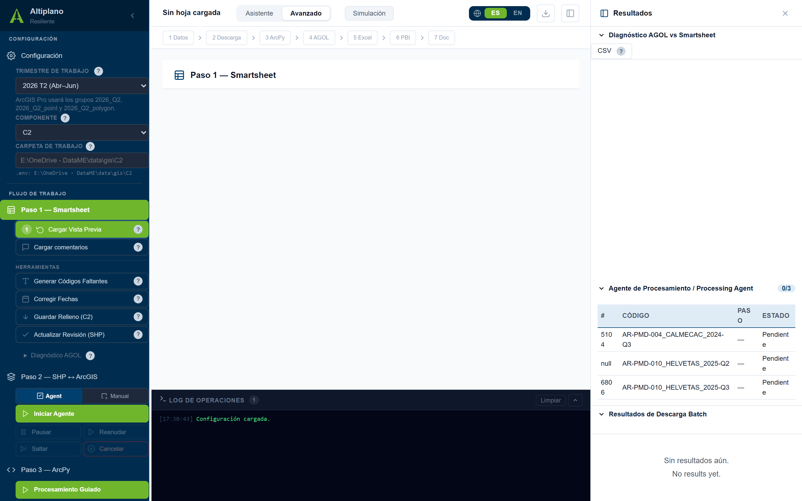
8.1 Cómo ejecutarlo
Seleccione el componente
En la barra lateral (por ejemplo C2).
Cargue la vista previa
Pulse Cargar Vista Previa.
Si es C2, elija PPD o PMD
En el filtro Tipo, escoja el subconjunto que va a trabajar.
Conecte AGOL y diagnostique
Pulse Diagnosticar AGOL vs SS.
Revise los resultados
En el panel derecho aparecen tres grupos: coinciden, con diferencia y nuevas.
8.2 La cola de trabajo
Cada fila del diagnóstico es un ítem de trabajo con una casilla. Marque la casilla solo cuando esa actividad ya esté lista, es decir:
- el archivo fue subido a ArcGIS Pro, y
- el
CÓDIGO DE LA ACTIVIDADquedó correctamente insertado.
El orden no importa: puede subir primero y luego poner el código, o al revés.
9. Paso 1 · Smartsheet
Aquí revisa y prepara los datos de la hoja. Los botones están en la barra lateral, bajo Paso 1 — Smartsheet.
| Botón | Qué hace |
|---|---|
| Cargar Vista Previa | Muestra la hoja en una tabla con filtros. |
| Cargar comentarios | Trae los comentarios de las filas visibles. |
| Generar Códigos Faltantes | Crea un código único para cada actividad con fecha pero sin código. |
| Corregir Fechas | Arregla fechas guardadas como texto en formato incorrecto. |
| Actualizar Revisión (SHP) | Marca la Calidad SIG solo en filas con datos de hectáreas. |
9.1 Vista previa y filtros
La tabla no es solo de lectura: sirve para localizar una actividad exacta mientras revisa el diagnóstico. Use los filtros (Tipo, Contrato, Trimestre, Hectáreas, Calidad SIG, Código, Sin código, Con shapefile, Fecha errónea) para aislar cada caso.
CÓDIGO DE LA ACTIVIDAD, el sistema nunca lo modifica ni
lo elimina. Solo usted puede cambiarlo manualmente. Es una regla de integridad de datos.
10. Paso 1b · Descargar y validar shapefiles
Estas funciones están en la barra lateral dentro de Paso 2 — SHP ↔ ArcGIS, con dos modos: Agent (automático) y Manual.
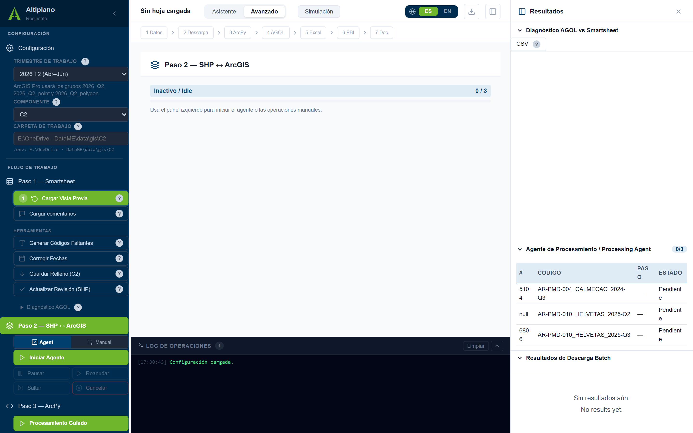
10.1 Modo Agente (recomendado)
El agente toma la cola del diagnóstico y procesa cada shapefile uno por uno. Use los controles Iniciar Agente, Pausar, Reanudar, Saltar y Cancelar. El avance se ve en la barra de progreso del centro y en el panel derecho.
10.2 Modo Manual
- Listar Adjuntos — ver qué archivos hay.
- Descarga Batch + Validar — descargar todos los ZIP y validar que sean shapefiles correctos.
11. Paso 3 · Procesamiento territorial (ArcPy)
Aquí el sistema genera scripts que usted copia y pega en la ventana Python de ArcGIS Pro. Usted no escribe código: solo copia, pega y ejecuta en ArcGIS Pro.
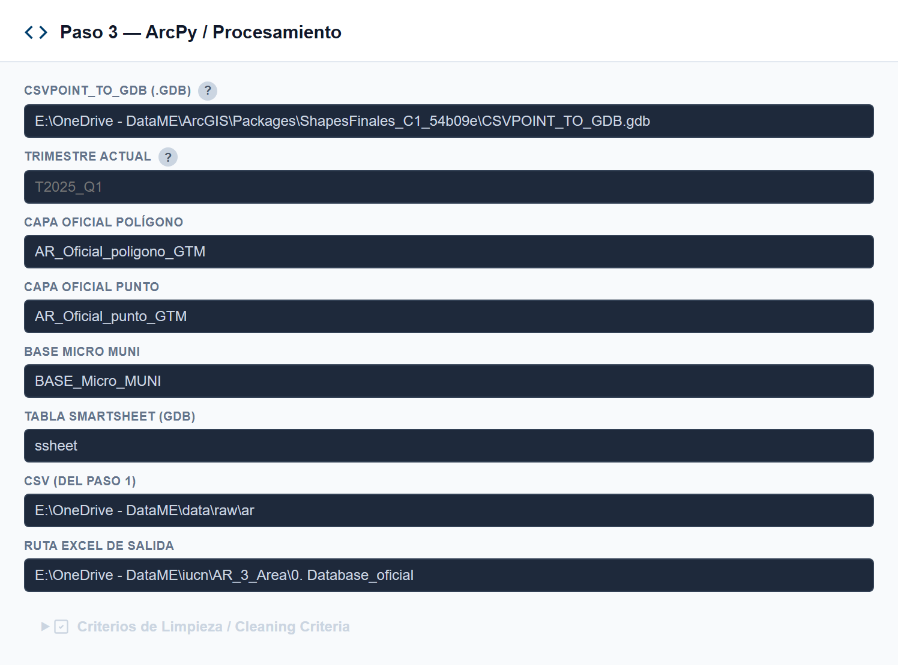
Generar
Pulse el botón del script que necesita. El texto aparece en el área Script Generado.
Copiar
Use Copiar al portapapeles.
Pegar en ArcGIS Pro
En la ventana Python de ArcGIS Pro, pegue y ejecute.
12. Paso 4 · Publicación en ArcGIS Online (AGOL)
Publica las capas actualizadas en la nube y verifica que coincidan tres fuentes.
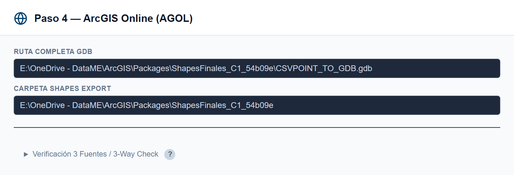
12.1 Verificación de 3 fuentes
Compara Smartsheet (la verdad absoluta) contra el GIS local y AGOL. Pulse Verificar SS vs GIS o genere el Script 3 Fuentes para correrlo en ArcGIS Pro.
13. Paso 5 · Excel maestro + Recepción M&E (Dafne)
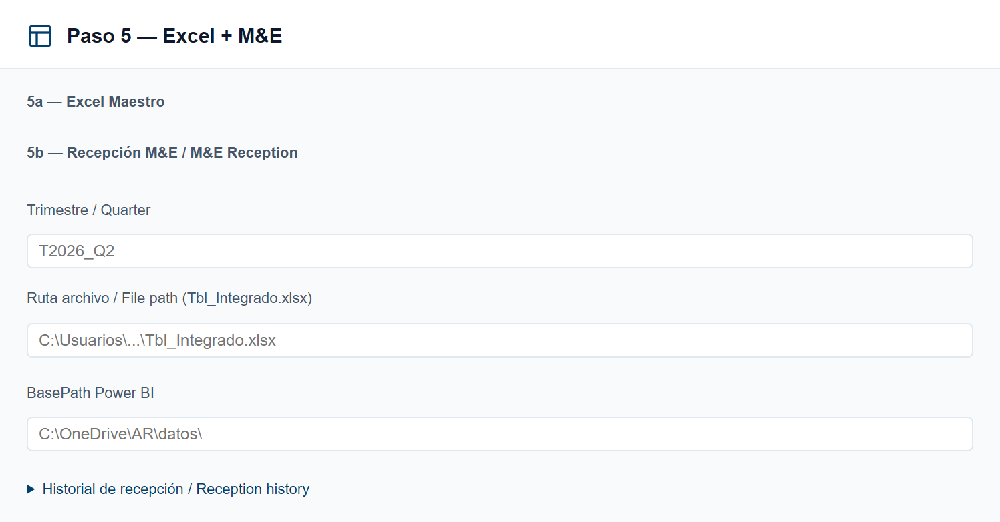
Tbl_Integrado.xlsx de Dafne.13.1 Excel maestro (5a)
Pulse Generar Excel Maestro para exportar
C1 + C2 + C3 a un solo archivo .xlsx, con una hoja por componente.
13.2 Recepción M&E (5b)
Validar
Indique el trimestre y la ruta del archivo, y pulse Validar archivo.
Colocar
Colocar en BasePath deja el archivo donde Power BI lo espera.
Historial
Revise el Historial de recepción por trimestre.
14. Paso 6 · Power BI
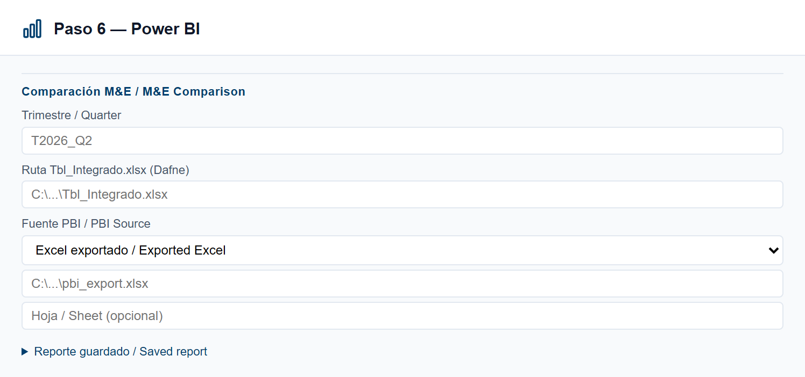
- Estado PBI Desktop — comprueba si Power BI está abierto.
- Abrir PBI Desktop — lanza el archivo del proyecto.
- Ejecutar Comparación — compara indicador por indicador (Dafne vs Power BI), con detalle al hacer clic.
15. Paso 7 · Reportes y respaldo
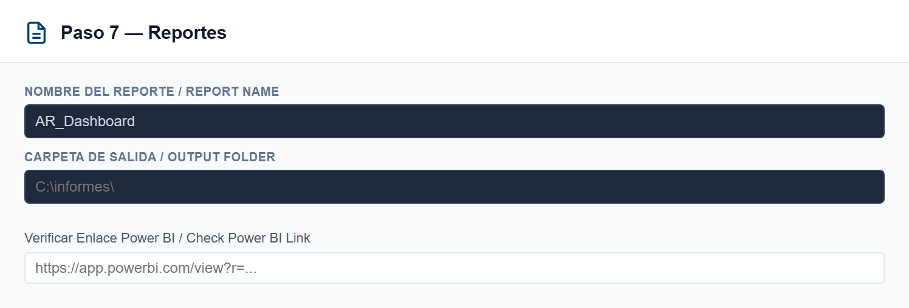
| Acción | Para qué sirve |
|---|---|
| Reporte Errores | Resume los problemas detectados en el pipeline. |
| Resumen Datos | Resumen general del trabajo del trimestre. |
| Exportar PDF | Guía para exportar el tablero de Power BI a PDF. |
| Verificar Enlace PBI | Comprueba que el enlace público de Power BI funcione. |
16. Orquestador
El Orquestador coordina todos los pasos y muestra el estado de cada uno. Es útil para ver, de un vistazo, en qué punto va el trabajo del trimestre.
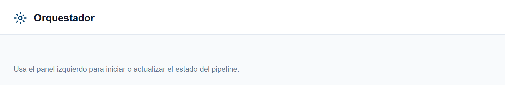
17. Modo Asistente paso a paso
Si prefiere que el sistema le lleve de la mano, active Asistente en la barra superior. Verá una sola tarjeta a la vez, con el título del paso, una explicación y los botones de acción.
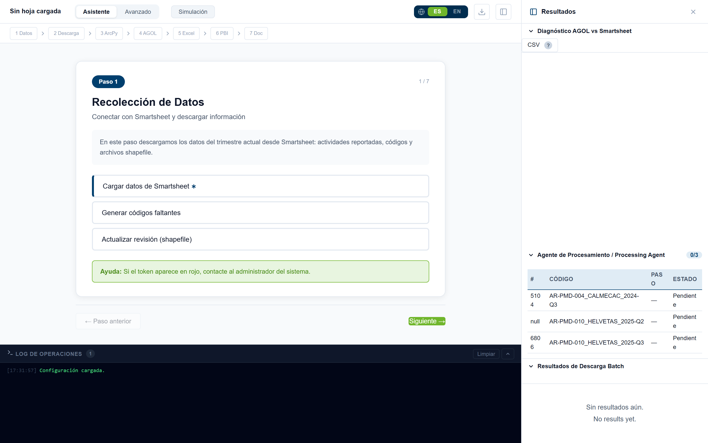
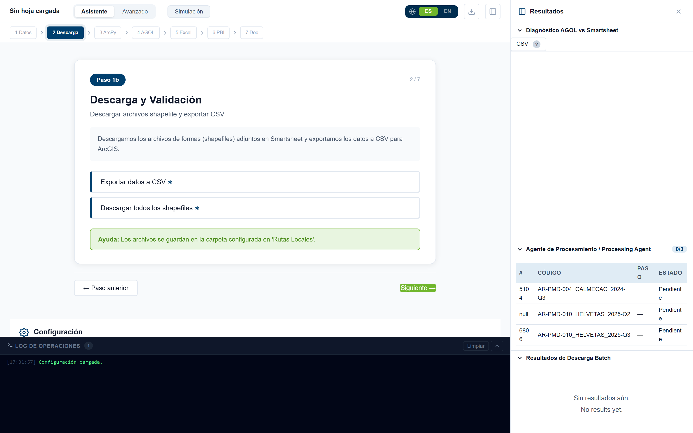
18. Reglas importantes
19. Problemas frecuentes
| Síntoma | Qué revisar |
|---|---|
| El tablero no abre en el navegador | ¿Está abierta la ventana negra (run.bat)? Use la dirección http://localhost:5000. |
| Token en rojo / “sin token” | Falta el token de Smartsheet. Contacte al administrador. |
| “No conectado a AGOL” | Pulse Conectar AGOL. La sesión caduca a los 60 minutos. |
| El diagnóstico no avanza | Espere a que termine (aviso amarillo). No inicie descargas mientras tanto. |
| No encuentro una actividad | Use los filtros de la vista previa (Código, Trimestre, Sin código…). |
| Una fila no tiene shapefile | El sistema usa el Excel de áreas como alternativa (convierte a puntos). |
| Algo falló y no sé qué | Mire el Log de Operaciones abajo; puede descargarlo y enviarlo al administrador. |